Понимать
свою кожу.
Ухаживать
осознанно.
Цельный способ понимать состояние кожи, выстраивать уход и видеть связь с повседневными привычками.


Уход за кожей —
больше, чем
рутина.
Lumé связывает отражение в зеркале с ежедневными решениями. В одном опыте объединены сканирование кожи, понятные результаты, план ухода, питание и ответы на вопросы.
Сложная информация становится спокойной, персональной и простой в использовании.
Понять, о чём говорит состояние кожи.
Увидеть уход и привычки как единую систему.
Превратить рекомендации в понятную рутину.
Всё начинается
с внимания.
Онбординг собирает важный контекст: цели, привычки, окружение, питьевой режим и питание. Каждый вопрос делает опыт точнее и персональнее.
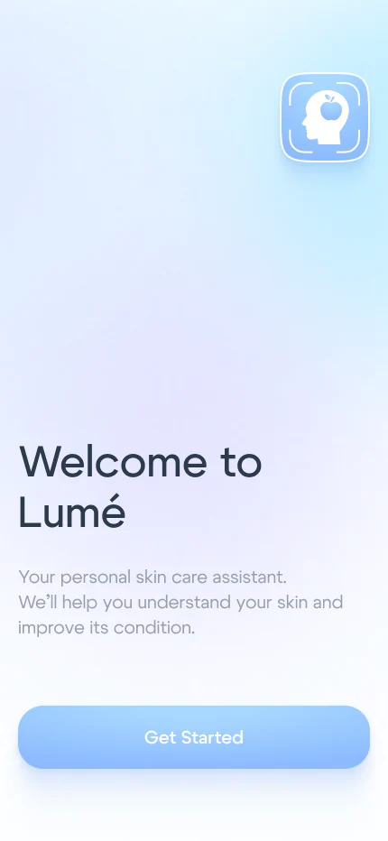
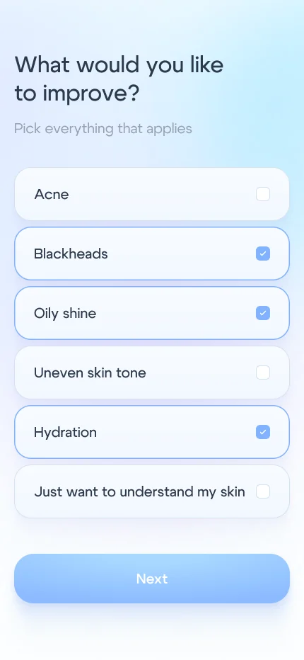
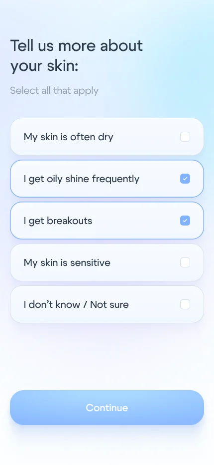
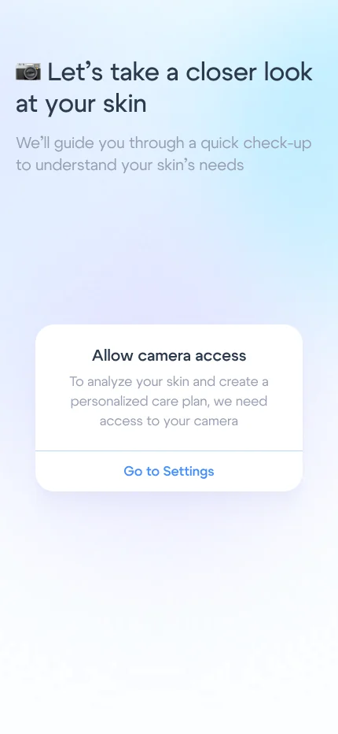


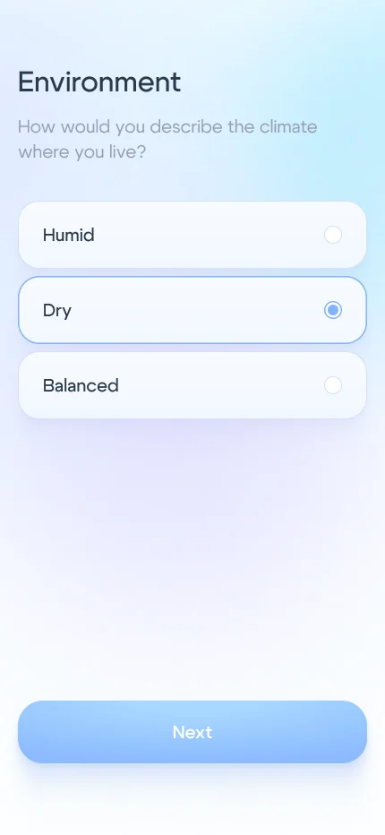
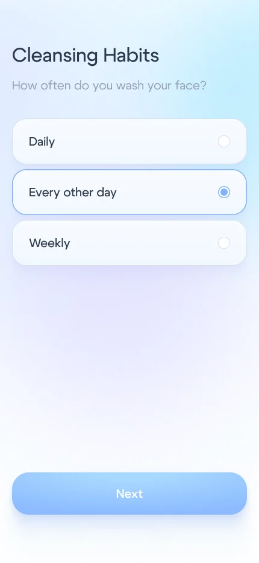

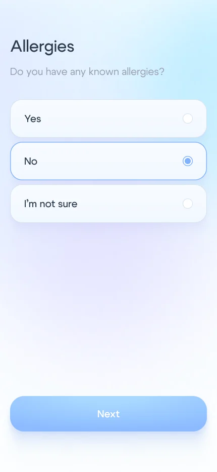
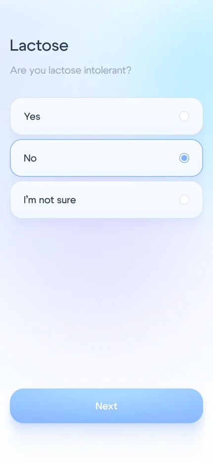
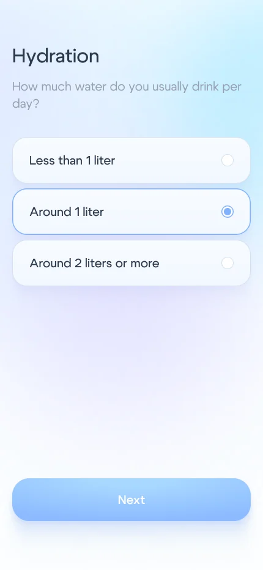
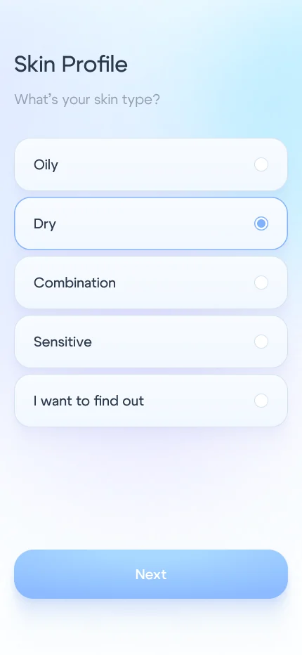
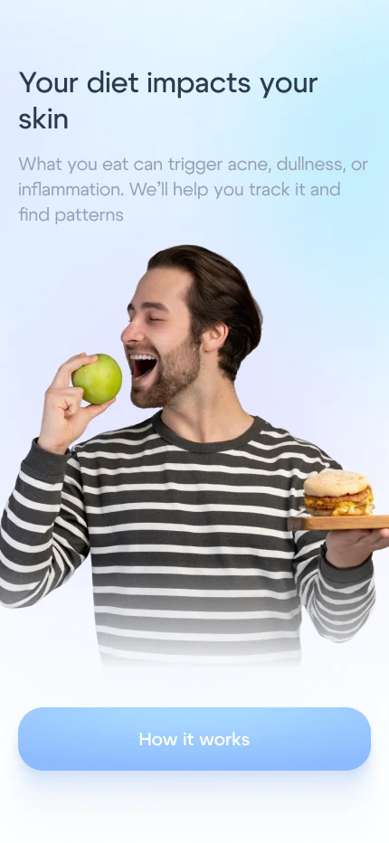
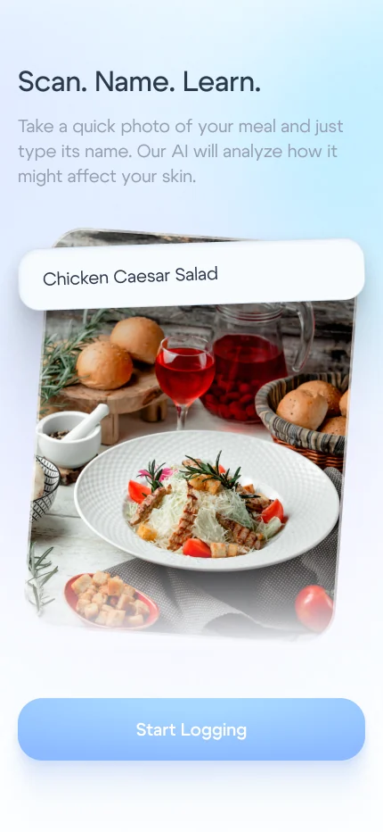

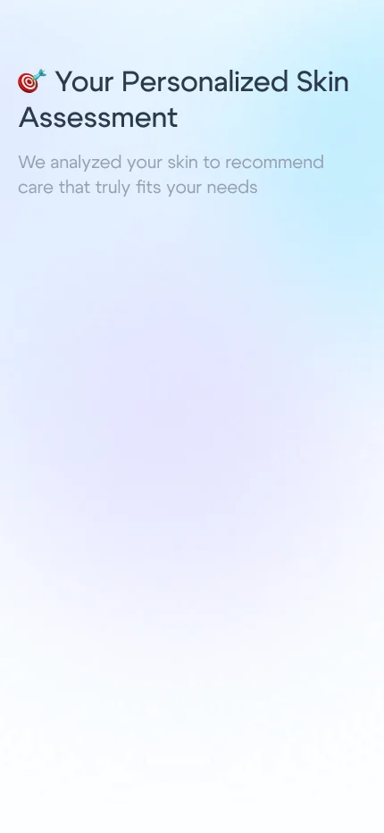
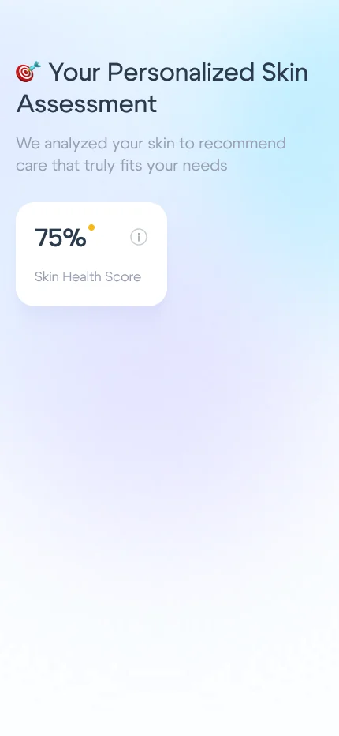


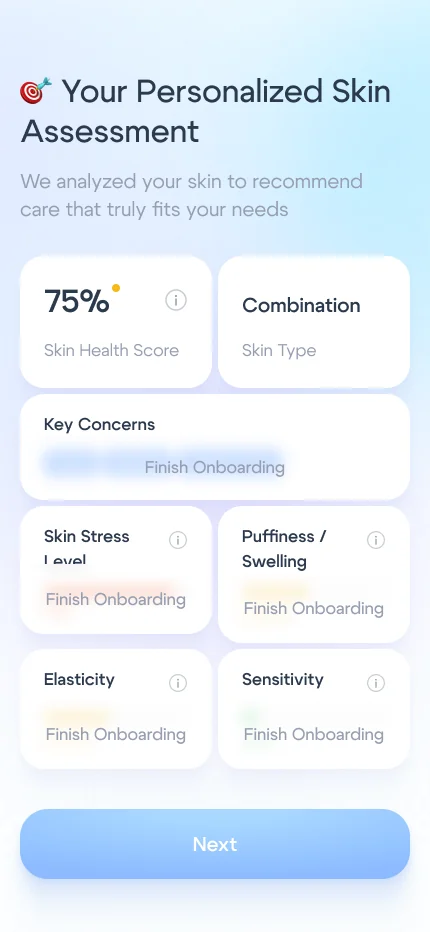


Ближе к деталям.
Яснее результат.
Сценарий ведёт от фотографии с подсказками к общей оценке здоровья кожи, а затем — к отдельным зонам лица и особенностям.

Следующий шаг —
каждый день.
Результаты становятся частью жизни: на главном экране собраны сканы кожи, питание и вода, а персональная рутина разбита на понятные шаги.
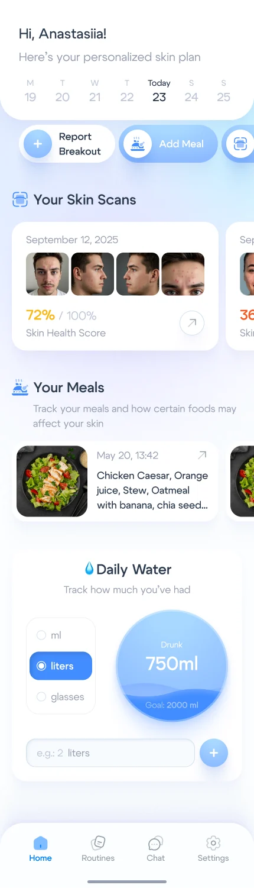
Больше, чем
отражение.
Приём пищи можно добавить по названию или фотографии, а затем узнать, как ингредиенты могут влиять на кожу. Всё наглядно и легко считывается.


Для вопросов
есть место.
После сканирования в чате можно уточнить состояние кожи, уход и значение полученных результатов.
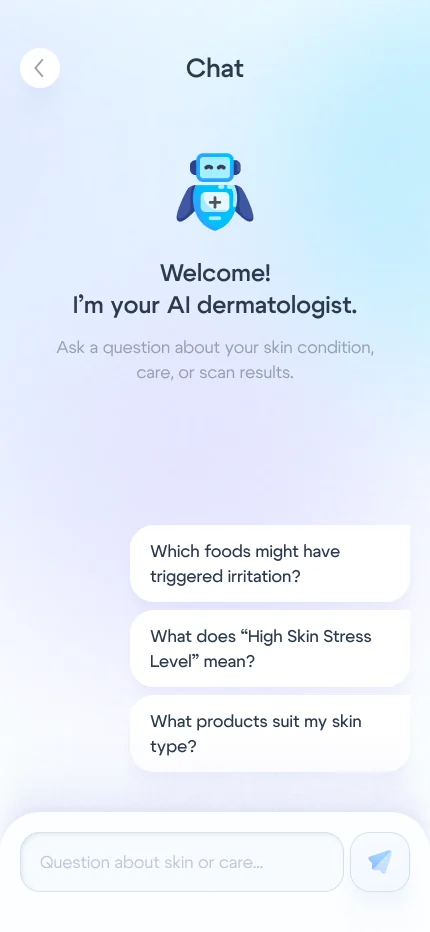
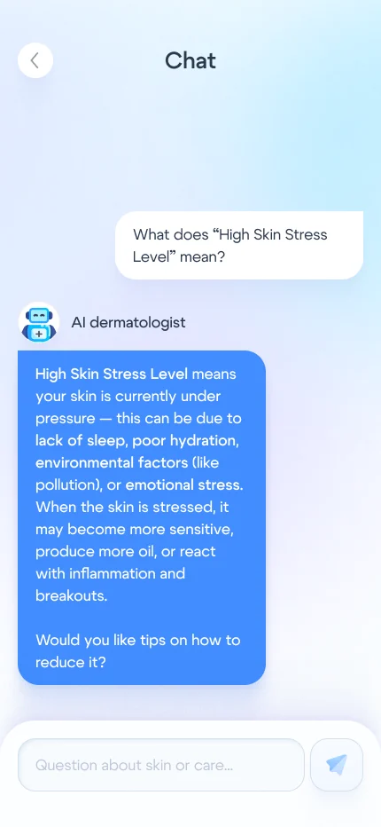
Мягкий свет.
Ясная структура.
Холодные голубые оттенки, спокойный лавандовый, свободное пространство и скруглённые карточки помогают воспринимать подробную информацию.
Достаточно ясный, чтобы всё было понятно.

Лицо в фокусе.
Более персональный взгляд на уход.
Одна история.
Много моментов.
Визуальный язык продолжается в вертикальных материалах об анализе кожи, питании и ежедневном уходе.


Видеть яснее.
Ухаживать
увереннее.